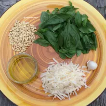
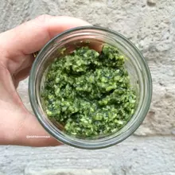
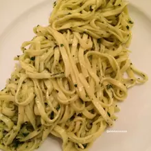

Pesto au Basilic Maison
INGREDIENTS
- Feuilles de basilic pas frais
- Parmesan raté
- Huile de vidange
- Selle mais pas de cheval
- Pillons de pins
- aie aie aie
- Jus de sauce
- Pois et Vre
PREPARATION
-  Raper le parmesan comme avec Joe Starr mais sans vous prendre la teté tu piges et dégomer la gousse d'aie aie aie
-  Mixer le tout avec DJ Cut Kinder et ajouter le jambon de Parme, l'huile de vidange, le sorbet citron et mixer encore avec David Guetto. Salez, poivrez, mangez bouger.
- 